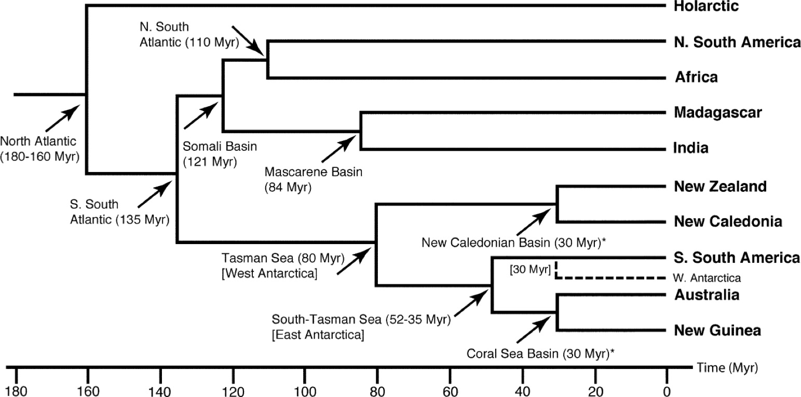

Given an area cladogram we can make predictions about the time sinlce species in two areas last shared a common ancestor.
Go to menti.com and answer the questions about the dates of separation between some areas. Code 5417 3050.
Convert this biological cladogram into a cladogram for the areas: AFrica, MADagascar, SAMerica, INdia, AUStralia, EURasia. The cladogram should be in Newick format, e.g., (AF,MAD,SAM,IN,AUS,EUR);
Hint: You might find it easier to do two cladograms, one for Microhylidae and one for Natanura.
Put your answers on menti.com Code 5997 2238
Remember you can go to the tree viewer to test your tree.
In this exercise we will gather estimates of divergence time for pairs of species in pairs of areas (e.g., India and Madagascar, New Zealand and Australia, etc.) from Time Tree and compare them with predictions based on geology (e.g., from the geological area cladogram above). We will enter the data in a spreadsheet. You can use the example papers listed on Moodle, or do your own searches.
For each pair of areas find a pair of species that occur in each area, and use http://www.timetree.org to get the estimate time when those two species last shared a common ancestor. Enter the minimum and maximum values in the confidence interval (CI), the median and the estimated value for the same pair. The chart on the right should then update with the new values.